材料
※粉量を変えると自動計算されます
生地
あんシート
型
作り方
生地
STEP 1
仕込み水を作る
ぬるま湯に砂糖とドライイーストを加え、よく混ぜ合わせます。
ぬるま湯に砂糖とドライイーストを加え、よく混ぜ合わせます。
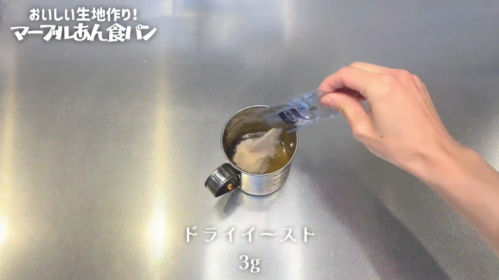
STEP 2
粉類と仕込み水を加え、混ぜる
強力粉と塩を混ぜ合わせ、仕込み水を加えてヘラで1分半ほど混ぜます。粉気がなくなり、生地がひとまとまりになればOKです。
強力粉と塩を混ぜ合わせ、仕込み水を加えてヘラで1分半ほど混ぜます。粉気がなくなり、生地がひとまとまりになればOKです。
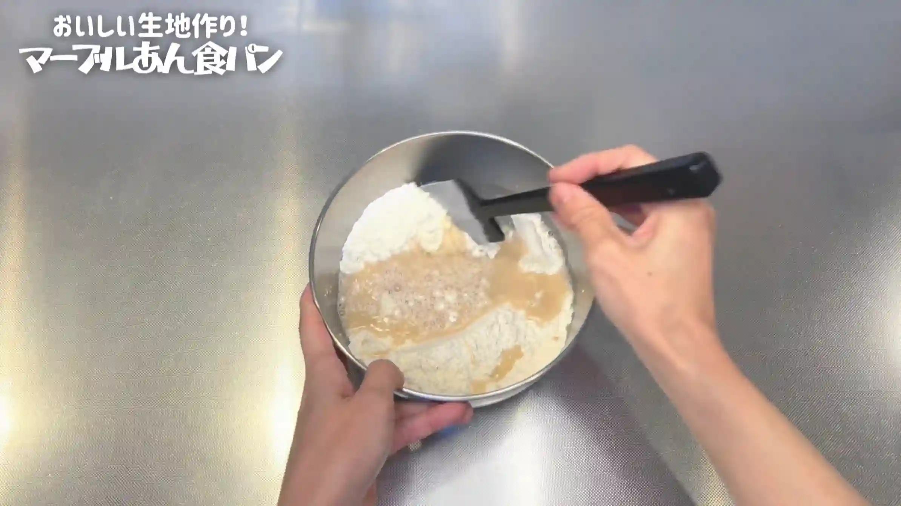
STEP 3
バターを加え、手で捏ねる（[動画 03:35]）
バターを加え、手で3分ほど捏ねます。ここでは生地をツルッとするまで捏ね上げる必要はなく、バターがなじんで生地全体の感触が均一になればOKです。短時間の「ちょい捏ね」で仕上げていきます。
バターを加え、手で3分ほど捏ねます。ここでは生地をツルッとするまで捏ね上げる必要はなく、バターがなじんで生地全体の感触が均一になればOKです。短時間の「ちょい捏ね」で仕上げていきます。
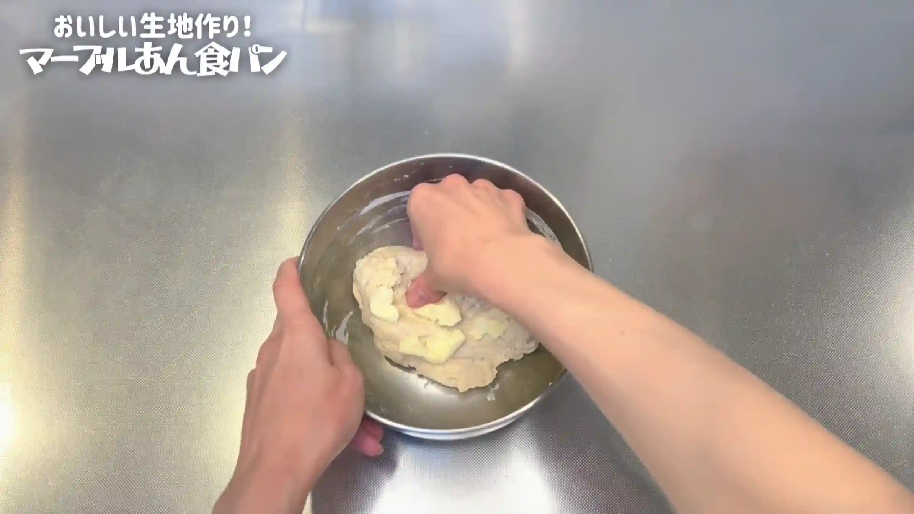
STEP 4
室温で15分おく
乾燥しないようにラップをして、生地を休ませます。ここではまだ生地が少し粗くても大丈夫です。15分休ませてから、次の工程で生地を整えていきます。
乾燥しないようにラップをして、生地を休ませます。ここではまだ生地が少し粗くても大丈夫です。15分休ませてから、次の工程で生地を整えていきます。
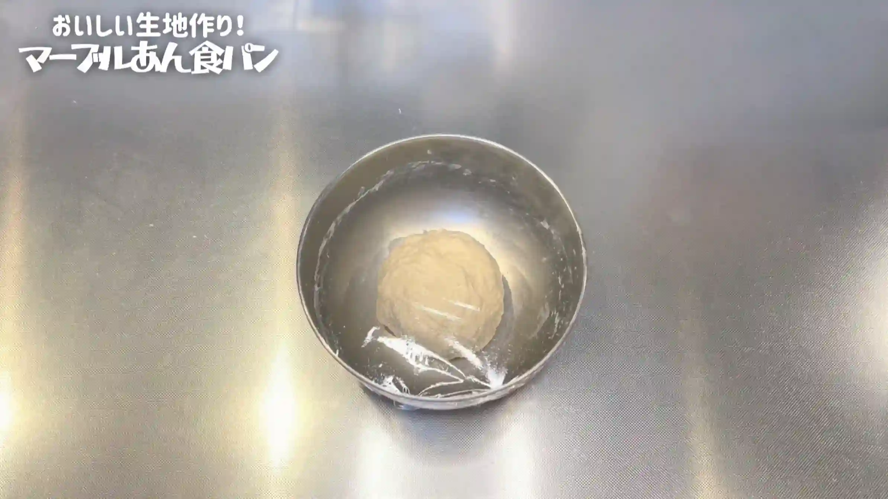
STEP 5
ボウルの中で生地を叩く（[動画 04:59]）
生地をボウルの中で1分ほど叩きます。生地を叩いていくうちに表面がなめらかになってきたらOKです。
生地をボウルの中で1分ほど叩きます。生地を叩いていくうちに表面がなめらかになってきたらOKです。
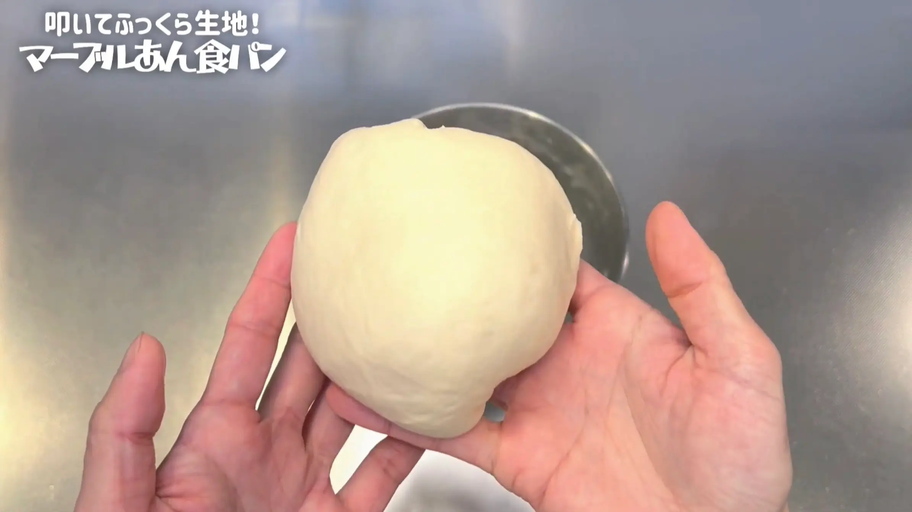
STEP 6
室温で生地が2倍に膨らむまでおく
乾燥しないようにラップをして、一次発酵させます。60分～90分を目安に、生地が元の約2倍に膨らんだら次の工程へ進みます。発酵時間は室温によって変わるため、生地の膨らみを確認して判断してください。
乾燥しないようにラップをして、一次発酵させます。60分～90分を目安に、生地が元の約2倍に膨らんだら次の工程へ進みます。発酵時間は室温によって変わるため、生地の膨らみを確認して判断してください。
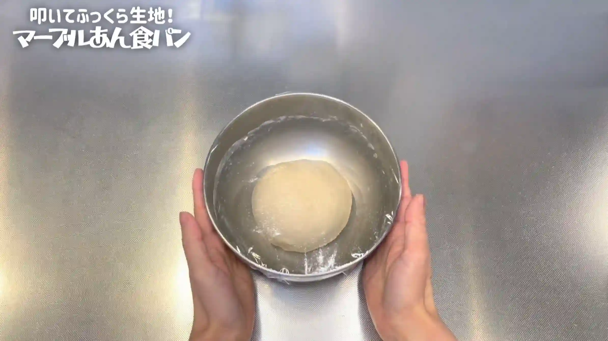
STEP 7
あんシートを作る
STEP 8
型にバターを塗る
型の内側にバターを塗っておきます。焼き上がったパンを型から取り出しやすくするため、底や側面までしっかり塗っておきます。
型の内側にバターを塗っておきます。焼き上がったパンを型から取り出しやすくするため、底や側面までしっかり塗っておきます。
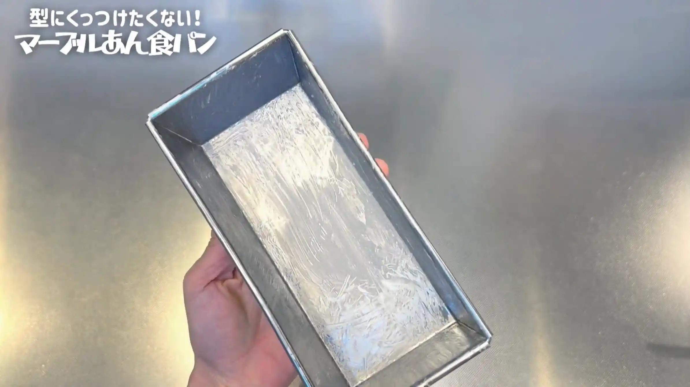
STEP 9
生地を広げ、シートを中央に置く
生地をあんシートの約2倍の大きさまで伸ばし、中央にあんシートを置きます。折り込みの時に生地の端からあんこがはみ出してこないようにするため、画像のように上下の生地にゆとりをもたせておくのがポイントです。
生地をあんシートの約2倍の大きさまで伸ばし、中央にあんシートを置きます。折り込みの時に生地の端からあんこがはみ出してこないようにするため、画像のように上下の生地にゆとりをもたせておくのがポイントです。
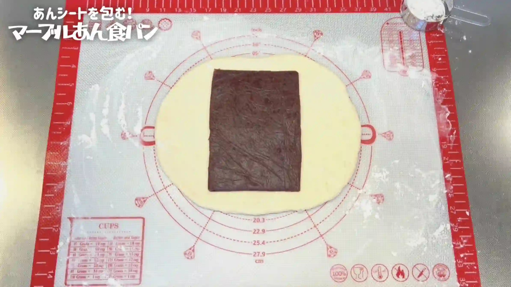
STEP 10
生地であんシートを包む
あんシートを生地で包み、つなぎ目をしっかり閉じます。あんシートがはみ出すと、生地を伸ばす作業がしにくくなるため、閉じ目をきちんと合わせておきます。
あんシートを生地で包み、つなぎ目をしっかり閉じます。あんシートがはみ出すと、生地を伸ばす作業がしにくくなるため、閉じ目をきちんと合わせておきます。
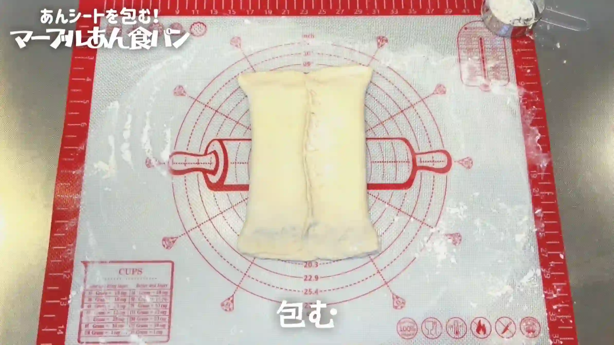
STEP 11
「縦1：横2」に伸ばす（[動画 10:20]）
生地を横長の向きに置き、まずは生地とあんシートを密着させるように、手でやさしく押して生地の厚みをそろえます。次にめん棒を縦方向にかけ、生地をならします。このときの縦を1として、横が2の比率になるよう、横方向に伸ばしていきます。細かい長さを測る必要はなく、1：2くらいの形になれば次の工程へ進みます。
生地を横長の向きに置き、まずは生地とあんシートを密着させるように、手でやさしく押して生地の厚みをそろえます。次にめん棒を縦方向にかけ、生地をならします。このときの縦を1として、横が2の比率になるよう、横方向に伸ばしていきます。細かい長さを測る必要はなく、1：2くらいの形になれば次の工程へ進みます。
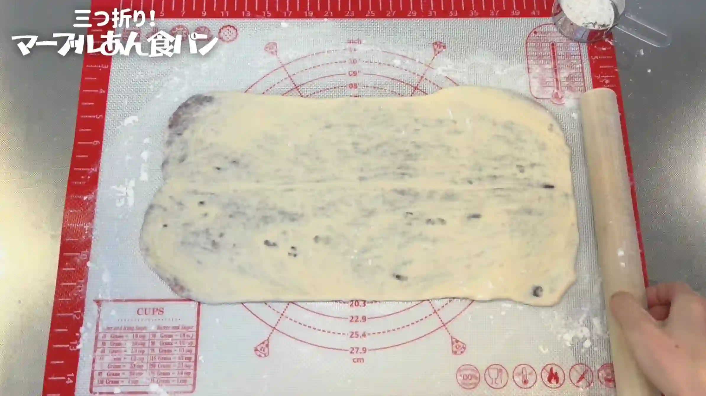
STEP 12
三つ折りする
伸ばした生地を三つ折りにします。
伸ばした生地を三つ折りにします。
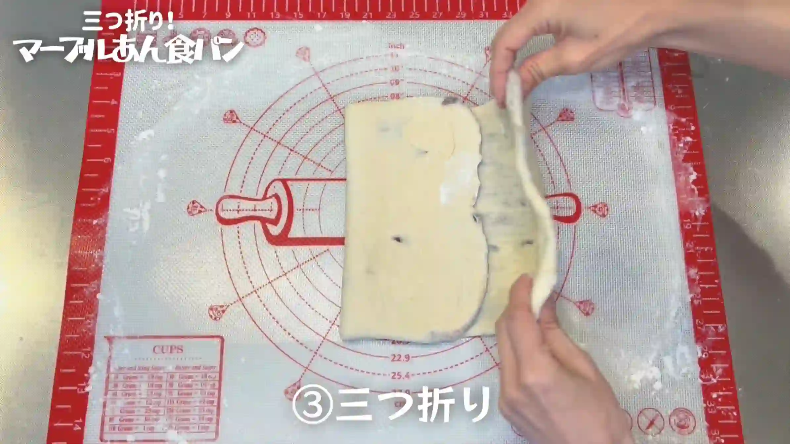
STEP 13
25㎝×18㎝に伸ばす
三つ折りした生地を、25㎝×18㎝ほどの長方形に伸ばします。生地が縮んで伸ばしにくい場合は、めん棒でしっかり押し広げながら伸ばしていきます。もしあんこがはみ出してきてしまったら、慌てずに打ち粉をしてベタつきをとってあげると、伸ばしやすくなります。
三つ折りした生地を、25㎝×18㎝ほどの長方形に伸ばします。生地が縮んで伸ばしにくい場合は、めん棒でしっかり押し広げながら伸ばしていきます。もしあんこがはみ出してきてしまったら、慌てずに打ち粉をしてベタつきをとってあげると、伸ばしやすくなります。
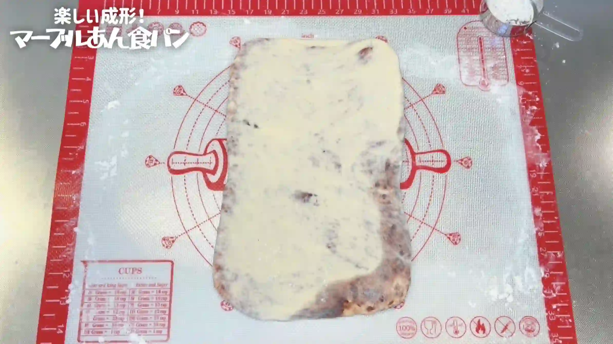
STEP 14
6本の短冊状に切る
生地を画像のように、6本に切り分けます。
生地を画像のように、6本に切り分けます。
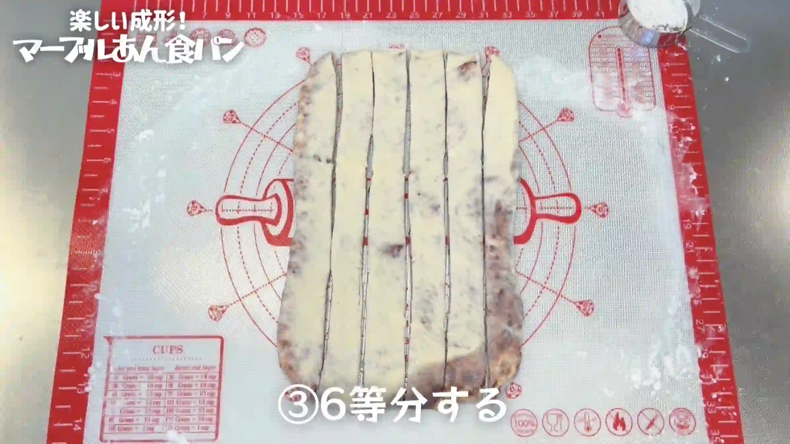
STEP 15
三つ編みをする（[動画 13:23]）
6本の生地を3本ずつに分け、三つ編みにします。断面ではなく、平らな面を上に向けて、ふんわりと編んでいきます。
6本の生地を3本ずつに分け、三つ編みにします。断面ではなく、平らな面を上に向けて、ふんわりと編んでいきます。
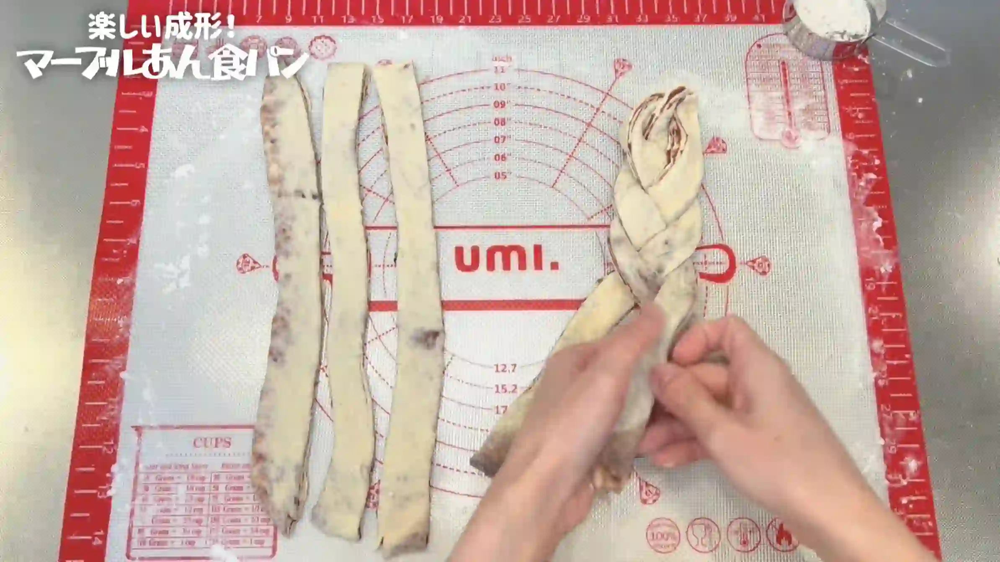
STEP 16
生地を丸めて、型に入れる（[動画 13:48]）
三つ編みにした生地をふんわりと丸め、巻き終わりを内側に入れて型に入れます。きつく丸めすぎず、三つ編みの形を残したまま入れるのがポイントです。
三つ編みにした生地をふんわりと丸め、巻き終わりを内側に入れて型に入れます。きつく丸めすぎず、三つ編みの形を残したまま入れるのがポイントです。
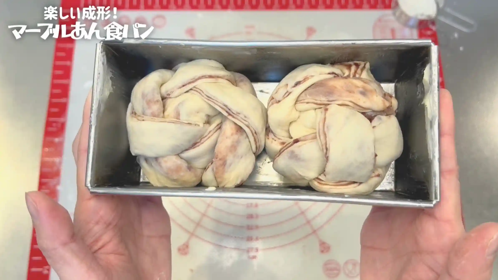
STEP 17
室温で50分おく
乾燥しないようにラップをして二次発酵させます。50分を目安に、生地が型いっぱいにふっくらと膨らんだら次の工程へ進みます。発酵時間は室温によって変わるため、生地の状態を見ながら調整してください。
乾燥しないようにラップをして二次発酵させます。50分を目安に、生地が型いっぱいにふっくらと膨らんだら次の工程へ進みます。発酵時間は室温によって変わるため、生地の状態を見ながら調整してください。
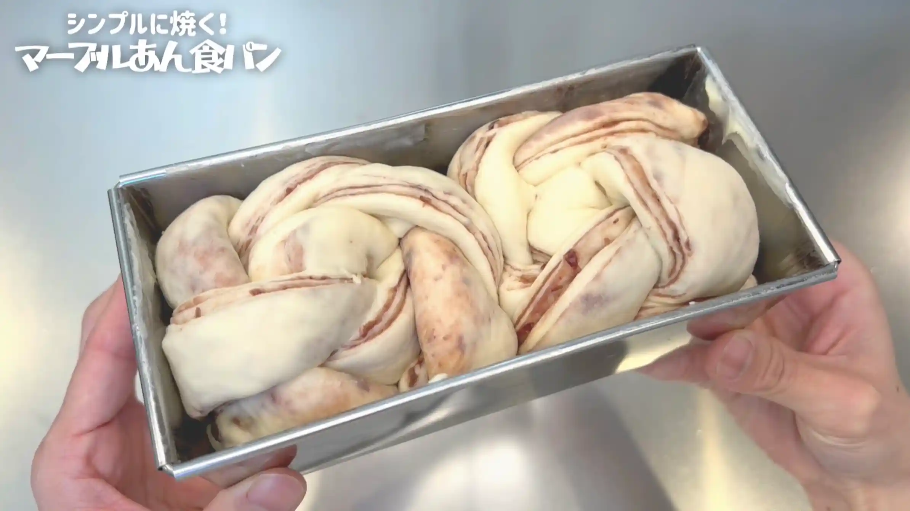
STEP 18
オーブンを250℃に予熱する
焼成前にオーブンを250℃までしっかり予熱しておきます。生地を入れるときに十分な温度になっているよう、あらかじめ予熱しておきます。
焼成前にオーブンを250℃までしっかり予熱しておきます。生地を入れるときに十分な温度になっているよう、あらかじめ予熱しておきます。
STEP 19
オーブン210℃で30分焼く
オーブンに入れ、210℃で30分焼きます。途中で表面に焼き色がついたら、アルミホイルをかぶせて焼きます。焼き時間は目安とし、焼き色を確認しながら、ご家庭のオーブンに合わせて調整してください。
オーブンに入れ、210℃で30分焼きます。途中で表面に焼き色がついたら、アルミホイルをかぶせて焼きます。焼き時間は目安とし、焼き色を確認しながら、ご家庭のオーブンに合わせて調整してください。
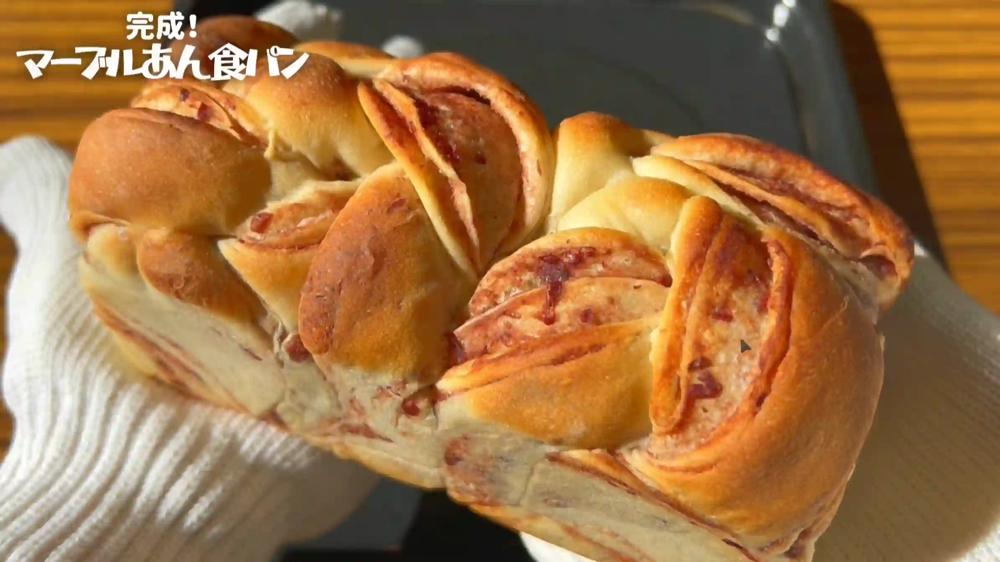
あんシート
STEP 1
あんこと強力粉を混ぜる
あんこと強力粉をボウルに入れ、粉気がなくなるまで混ぜ合わせます。薄力粉を入れるレシピも多くありますが、今回は手軽に生地の材料と同じ強力粉を加えます。強力粉を入れることで、あんこの水分を適度に吸い、シートとして扱いやすくなります。
あんこと強力粉をボウルに入れ、粉気がなくなるまで混ぜ合わせます。薄力粉を入れるレシピも多くありますが、今回は手軽に生地の材料と同じ強力粉を加えます。強力粉を入れることで、あんこの水分を適度に吸い、シートとして扱いやすくなります。
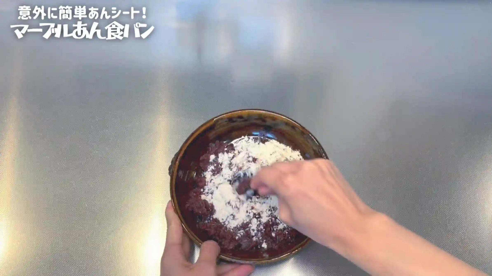
STEP 2
レンジで加熱し、水分を飛ばす
ラップをせずにレンジ600Wで1分加熱し、その都度よく混ぜます。これを3回繰り返し、あんこの水分を飛ばしながら、まとまりやすい状態にしていきます。あんこは焦げやすいため、加熱したら必ずよく混ぜてください。また、使用するあんこの水分量によって、加熱時間は調整してください。
ラップをせずにレンジ600Wで1分加熱し、その都度よく混ぜます。これを3回繰り返し、あんこの水分を飛ばしながら、まとまりやすい状態にしていきます。あんこは焦げやすいため、加熱したら必ずよく混ぜてください。また、使用するあんこの水分量によって、加熱時間は調整してください。
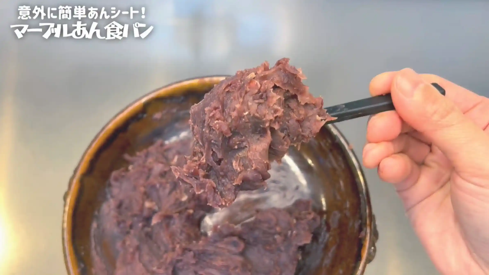
STEP 3
バターを混ぜる
バターを加え、全体が均一になるまで混ぜ合わせます。バターを加えることでシートがなめらかになり、折り込みの際に伸びが良くなります。バターがなじみ、まとまりのある状態になればOKです。
バターを加え、全体が均一になるまで混ぜ合わせます。バターを加えることでシートがなめらかになり、折り込みの際に伸びが良くなります。バターがなじみ、まとまりのある状態になればOKです。
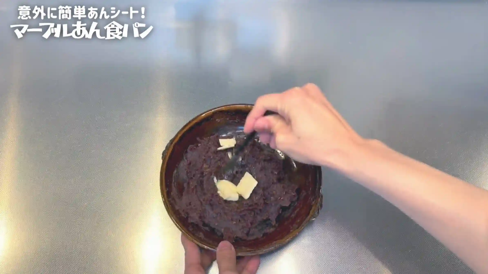
STEP 4
シート状にして冷凍する
あんシートをラップで包み、手のひらサイズのシート状に整えて冷凍します。しっかり冷やして固めておくことで、この後に生地で包みやすくなります。
あんシートをラップで包み、手のひらサイズのシート状に整えて冷凍します。しっかり冷やして固めておくことで、この後に生地で包みやすくなります。
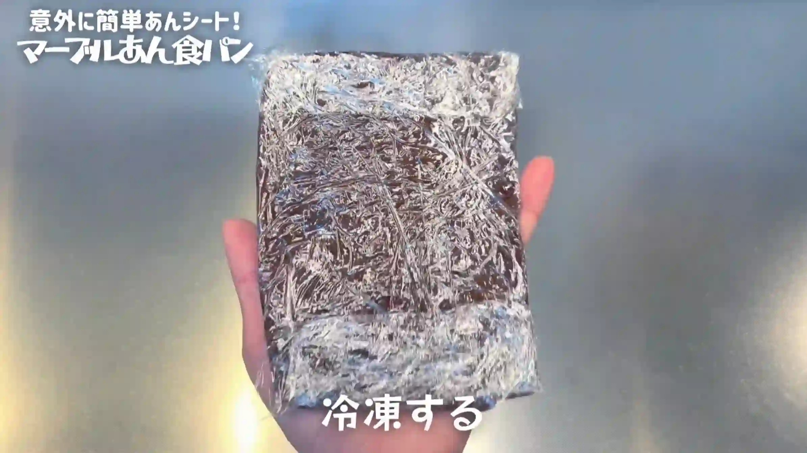
動画でチェック
おいしく作るためのワンポイントコラム
切る場所によって、いろいろな模様が飛び出す。そんな『マーブルあん食パン』を、少しだけ手間をかけて焼いてみませんか？あんシートを作ったり、生地を何度も伸ばしたり、折り込みの作業って「ちょっと難しいかも……」ってちょっとドキドキしますよね。でも、安心してください！今回のパンは最後に三つ編みをしてくるくる巻く成形。この成形はなんだかんだと誤魔化しが効くため、多少失敗しても可愛く焼き上がるのが素敵なところ！気楽にワクワクしながら挑戦してみてください。
おうちで可愛くておいしいマーブル食パンを焼き上げるための3つのコツをまとめました。
① しっとり生地のコツ
一般的に、マーブル食パンなどの折り込みパンは「生地の伸ばしやすさ」を優先して、薄力粉をブレンドするレシピが多いのですが、今回はあえて薄力粉を混ぜず、強力粉100％で仕込んでいます。こうすることで、焼き上がりがパサつかず、水分をギュッと抱え込んだしっとりふわふわ極上の食感に仕上がります。少し生地を伸ばすときに弾力を感じますが、生地にバターをしっかり練り込むことで、強力粉100％でも伸ばしやすい生地になります。
② マーブル成形のコツ
あんシートを生地で包んで三つ折りにしたら、成形に入ります。今回は生地を6等分にカットして、三つ編みを2つ作って型に入れます。この三つ編み、きっちり固く編むのではなく、生地を引き伸ばさないように自然な太さのままゆるゆるっと太めに編むのがポイント。こうすることで、生地のふんわり感を保ちつつ、あえて不揃いなマーブル模様を作ることで、カットしたときに場所によって全然違う、手作りならではの最高に可愛い表情に出会えます。型の中で左右のバランスが偏りにくい成形なので、パン作りに自信がなくても安心です！
③ 100均型の扱いのコツ
今回はお手軽に100均（CanDoの220円商品など）の18cmステンレス製パウンド型を使って焼き上げます。ただ、100均のステンレス型は、おうちのオーブンの火力によっては生地が驚くほどくっつきやすいのが難点。少しでも塗り残しがあると、隙あらば生地が引っかかって型から外れなくなってしまいます。そのため、型には「ちょっと多いかな？」と感じるくらいバターをたっぷり厚めに塗っておくのが外しやすくするための最大の秘訣です。この一手間で、焼き上がりにパンが型からするっと気持ちよく抜けてくれます。
しっかり30分ほど焼き上げたら、お上品で優しい甘さのあん食パンの完成です。カットして、少し焦げるくらいにしっかり目にバタートーストにすると、さっくりして最高！牛乳やコーヒーをクイっといきたくなる贅沢な味わいを、ぜひおうちで楽しんでみてください！
おうちで可愛くておいしいマーブル食パンを焼き上げるための3つのコツをまとめました。
① しっとり生地のコツ
一般的に、マーブル食パンなどの折り込みパンは「生地の伸ばしやすさ」を優先して、薄力粉をブレンドするレシピが多いのですが、今回はあえて薄力粉を混ぜず、強力粉100％で仕込んでいます。こうすることで、焼き上がりがパサつかず、水分をギュッと抱え込んだしっとりふわふわ極上の食感に仕上がります。少し生地を伸ばすときに弾力を感じますが、生地にバターをしっかり練り込むことで、強力粉100％でも伸ばしやすい生地になります。
② マーブル成形のコツ
あんシートを生地で包んで三つ折りにしたら、成形に入ります。今回は生地を6等分にカットして、三つ編みを2つ作って型に入れます。この三つ編み、きっちり固く編むのではなく、生地を引き伸ばさないように自然な太さのままゆるゆるっと太めに編むのがポイント。こうすることで、生地のふんわり感を保ちつつ、あえて不揃いなマーブル模様を作ることで、カットしたときに場所によって全然違う、手作りならではの最高に可愛い表情に出会えます。型の中で左右のバランスが偏りにくい成形なので、パン作りに自信がなくても安心です！
③ 100均型の扱いのコツ
今回はお手軽に100均（CanDoの220円商品など）の18cmステンレス製パウンド型を使って焼き上げます。ただ、100均のステンレス型は、おうちのオーブンの火力によっては生地が驚くほどくっつきやすいのが難点。少しでも塗り残しがあると、隙あらば生地が引っかかって型から外れなくなってしまいます。そのため、型には「ちょっと多いかな？」と感じるくらいバターをたっぷり厚めに塗っておくのが外しやすくするための最大の秘訣です。この一手間で、焼き上がりにパンが型からするっと気持ちよく抜けてくれます。
しっかり30分ほど焼き上げたら、お上品で優しい甘さのあん食パンの完成です。カットして、少し焦げるくらいにしっかり目にバタートーストにすると、さっくりして最高！牛乳やコーヒーをクイっといきたくなる贅沢な味わいを、ぜひおうちで楽しんでみてください！


100均のパウンド型を活用して、切るたびにワクワクする美しい模様に出会える『マーブルあん食パン』のレシピです！見た目だけでなくおいしさにもこだわった、しっとりふわふわ極上の生地。コラムでは可愛くて美味しいパンを作るための「しっとり生地のコツ」「マーブル成形のコツ」「100均型の扱いのコツ」の3つのコツを詳しく解説します。